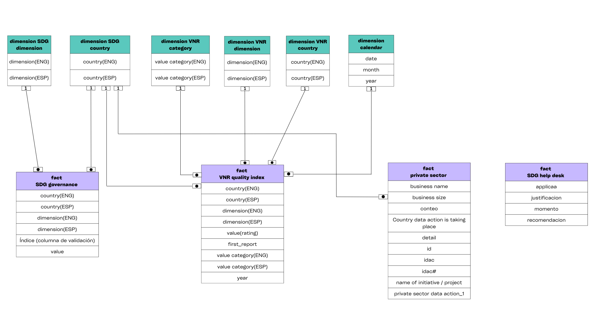
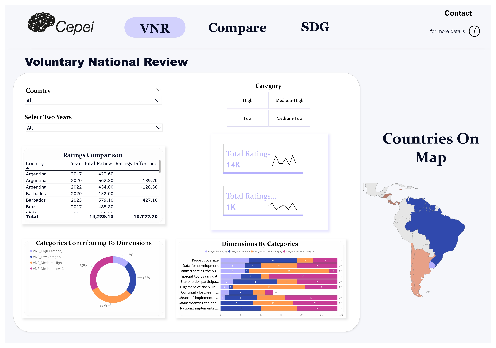
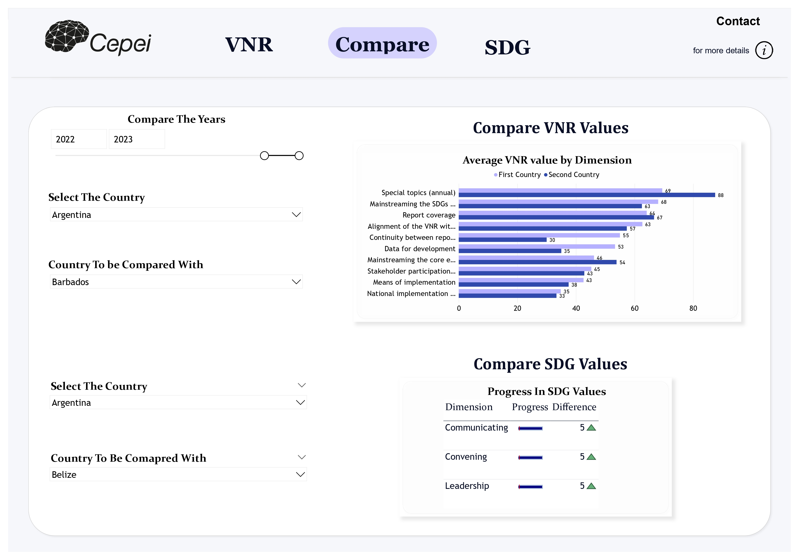
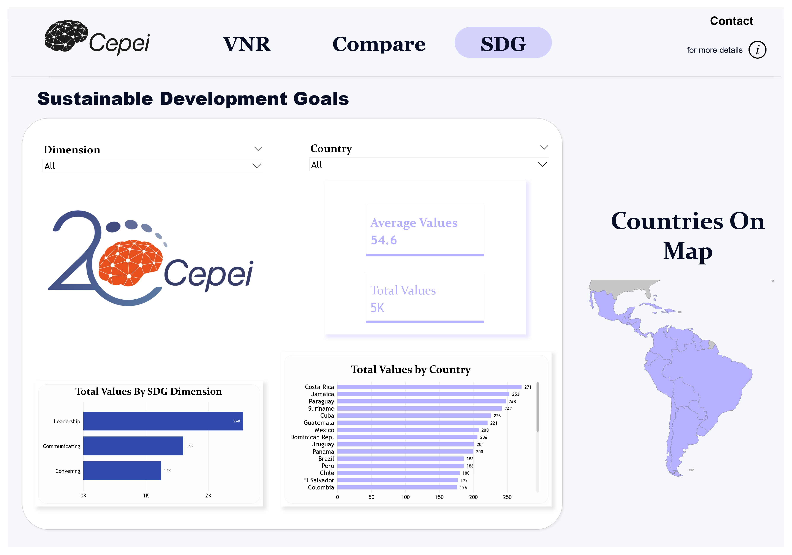

SDG ANALYSIS LATIN-AMERICAN GOVERNMENT
SOCIAL & ECONOMIC DEVELOPMENT / GOVERNMENT

Project Background
The Sustainable Development Goals (SDGs) are a set of 17 goals that the world has agreed to achieve by 2030. These goals aim to solve problems like poverty, hunger, inequality and climate change. Latin America and the Caribbean (LAC) face many challenges in achieving these goals. They have problems with poverty, inequality, and environmental issues. One big problem is that they don't have enough data to track their progress. Cepei is an organization that helps countries in LAC achieve the SDGs. They have a lot of experience and knowledge about sustainable development. Cepei helps governments and communities collect and use data to make better decisions. They also teach people how to use data to track progress towards the SDGs.
Problem Statement:
The fundamental challenge is the need for timely and data-driven decision support that may empower key stakeholders, particularly government officials and institutions responsible for SDG policy formulation, implementation, and monitoring. Furthermore the LAC region's data quality and availability remain variable, creating a substantial barrier to monitoring and reporting progress toward the SDGs. Further examination and improvement of institutional frameworks for SDG implementation in LAC countries is required.
Objective:
- This objective aims to create a comprehensive understanding of the region's SDG performance by analyzing key indicators across goals.
- By comparing data across countries and SDGs, the project will pinpoint which goals are progressing well and which require further attention.
- The analysis will provide valuable insights for governments and international organizations to prioritize their efforts and optimize resource allocation for maximum impact.
- The Power BI visualization will present complex data in an accessible and engaging format, raising public awareness and encouraging broader participation in achieving the SDGs.
Contribution:
- The analysis focuses on Latin America and the Caribbean, addressing the unique challenges and opportunities of the region.
- By analyzing SDG-related indicators and trends, the project provides valuable insights into the region's strengths and weaknesses regarding social, economic, and environmental sustainability.
- Stakeholders including policymakers, international organizations and businesses can use these insights and track progress over time.
Scope:
- The project focuses on 16 countries and territories in Latin America and the Caribbean.
- The project encompasses all 03 SDGs dimension, with potential for deeper analysis of specific goals based on data availability and project focus.
- The analysis will cover available data, with the option to include historical trends and projections for future progress.
Data Structure & Model View:

This model is star schema where table dimension SDG, dimension SDG country, dimension VNR category, dimension VNR dimension, dimension VNR country and dimension calendar consists of unique records while table fact SDG governance, fact VNR quality index, fact private sector and fact SDG help desk consist of duplicate records.
Executive Summary:
Overview of Findings:

- Overall, the dashboard reflects a comparison between two countries with total of 15,000 ratings across countries showcasing mixed progress in SDG implementations across Latin America and the Caribbean (LAC).
- High and Medium-High categories have the largest contribution to overall dimensions, each representing 32% of the progress, while the Medium-Low category contributed 12%.
- Key contributing dimensions include mainstreaming the SDGs at national level, alignment of VNR with SDG reporting guidelines where the VNR Medium-High Category had the highest scores with 20 and 18 across several dimensions. Special topics where VNR Medium-Low Category is taking the lead with 17 score whereas report coverage has the highest score in VNR High Category with 7 and 12 respectively.

- Upon selecting the two countries and the years comparison in the slicer, the output of the progress values are then displayed by clustered bar chart in the “Average VNR value by dimension” visual.
- Furthermore, selecting the two countries below, we would be able to have a glimpse of “Progress in VNR” values between two countries along with symbol where green indicator symbol represents the first country is leading whereas red symbol represents the first country is falling behind.

- For Sustainable Development Goals, leadership is at its peak with 2,600 highest score value while convening has the lowest score with 1,200.
- Costa-Rica has overtaken the rest of the countries with 271 value followed by Jamaica with 253 value, Paraguay with 248 value. Accompanied by these countries, Venezuela has the value with 80, Grenada with 74 and Haiti with 48.
- The bottom 3 countries such as Venezuela, Grenada and Haiti needs a lot of improvement in their SDGs in terms of leadership, communicating and convening SDG dimension.
Solution:
Create visually appealing and user-friendly dashboards to present SDG data in various formats like maps, charts, and graphs. Allow users to explore specific countries, goals and indicators in detail. Enable users to compare data across countries, regions, and timeframes. Share the project results with relevant stakeholders through reports, presentations and online platforms.
Recommendations:
- Analyze what specifically drives Costa Rica's current performance across different SDGs. Are there specific policies, investments or initiatives that can be replicated in other countries
- Facilitate dialogue and knowledge transfer between Costa Rica and other countries in the region. This could involve workshops, peer exchanges, and capacity-building programs.
- While learning from Costa Rica, countries should adapt best practices to their specific needs and challenges.
- Support the development of visionary leaders capable of driving SDG progress. This includes programs for leadership training, mentorship, and public engagement.
- Encourage transparent, accountable, and participatory governance practices to ensure efficient resource allocation and policy implementation.
- Invest in community-driven initiatives and build local capacity to implement and monitor SDG-related actions.
Interactive Dashboard:
(Note: You can filter, slice & dice with the below dashboard)